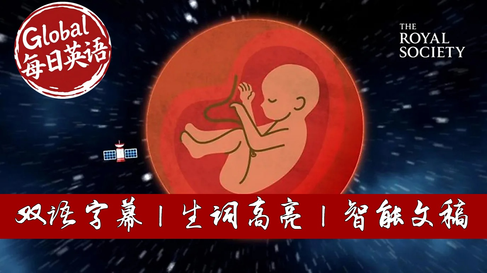

【BBC精选：我们能在太空中生宝宝吗？】
Summary: NASA plans to send humans to Mars within decades, aiming for eventual independence from Earth. Space radiation poses significant risks to human reproduction, damaging sperm and egg cells. Animal studies show some promise, with mouse sperm producing healthy offspring despite DNA changes. Microgravity could cause developmental issues, affecting balance, bone density, and even surgery procedures. Children born in space may never adapt to Earth's gravity, raising ethical questions about consent and human identity. Solving these challenges is crucial for deep space exploration.
摘要： NASA计划在未来几十年内将人类送上火星，最终实现不依赖地球的独立生存。太空辐射对人类繁殖构成重大风险，会损害精子和卵细胞。动物研究显示了一些希望：小鼠精子虽出现DNA变化，仍能孕育健康后代。微重力环境可能导致发育问题，影响平衡感、骨密度甚至手术操作。在太空出生的孩子可能永远无法适应地球重力，这引发了关于人类身份和代际同意的伦理争议。解决这些挑战对于深空探索至关重要。

⏱️ Estimated Reading Time: 7 min.
📚 四级生词 📚 六级生词 📚 雅思生词 📚 托福生词 📚 专八生词 📚 SAT生词 📚 考研生词 📚 GRE生词
Humans will travel to Mars within the next couple of decades.
That's according to NASA anyway.
The ultimate goal to live entirely independent of Earth.
Scientists are already developing technology that will enable us to travel the incredibly long distances and keep us alive when we get there.
But if we really want to inhabit other worlds, a major issue needs to be addressed.
How do we reproduce in space?
If humans had a base on Mars, we couldn't keep popping back 225 million kilometres,
a journey likely to take around seven months to have children on Earth.
Humans will need to have babies in space.
But space is a hostile environment for the human body, with high levels of radiation.
Something both sperm and eggshells are highly sensitive to.
NASA recently sent the first samples of frozen human sperm to space.
The frozen cells were successfully reactivated, but showed DNA damage and moved differently,
which would likely reduce their chances of fertilizing an egg.
More encouragingly, freeze-dried mouse sperm that spent several months in space, produced a root of healthy pops when fertilized back on Earth.
Although the sperm DNA had changed, the damage was repaired upon contact with the female egg.
For a fetus to develop in space, however, it would need to be protected from this harmful radiation.
Its rapid growth rate would make a baby particularly vulnerable to genetic mutations,
increasing the risk of childhood cancers.
And perhaps a significant as radiation in the long term is time spent away from Earth's gravity.
We know that low gravity causes astronauts' muscles to atrophy, bones to become less dens,
and the quantity of circulating blood in the body to decrease.
The first baby born off-planet Earth will most likely be born on Mars,
where gravity is about 38% of Earth's, which is bound to affect both birth and development.
But if a child was born in microgravity,
for example on a space station, the impacts would be much more pronounced.
For the sake of argument, let's imagine this happening.
It's thought the gravity helps shape parts of the inner ear that play an important role in balance and orientation.
Rat pops born after developing in space, couldn't sense which way was up or down,
and microgravity would continue to pose challenges for childbirth itself.
On Earth, there is always the option of a C-section,
but although medics have mended rat's tails and performed keyhole surgery on pigs, no one has ever been operated on in space.
Blood can spatter even more than it usually does on Earth, floating around unconstrained by gravity,
or a cumpul into a kind of dome around a wound, making it hard to see what's going on.
Today, if an astronaut needs emergency surgery, they have to ditch their mission and return to Earth.
But presuming the birth was successful, a baby growing up in microgravity would look, move,
and behave very differently to one born on Earth.
There, a child would not learn to crawl, but would instead learn to float,
propelling themselves using their arms.
Without a strict exercise regime, it's possible their bones and muscles would be smaller in their lower body,
yet bigger and stronger in their upper body.
Like astronauts, fluids in their body could travel upwards into their chest and head,
giving them a puffy face.
As a result, a child born and raised in space might never be able to live on Earth.
It's possible they might not be able to walk, stand, or even breathe.
Earth's gravity is so important to humans that it's been described as the identity of mankind.
Without it, would a human subspecies emerge, only able to survive in space?
Assuming all the physical challenges can be overcome, there are other issues that would need to be considered.
What would be the impacts of raising a child in such an isolated and extreme environment?
While a mother may be able to consent, the child cannot.
Is it ethical to raise human beings who may never be able to set foot on planet Earth?
Right now, having a baby in space may feel like something from a sci-fi film.
But ultimately, it's a puzzle we have to solve if we want to travel deeper into our solar system.